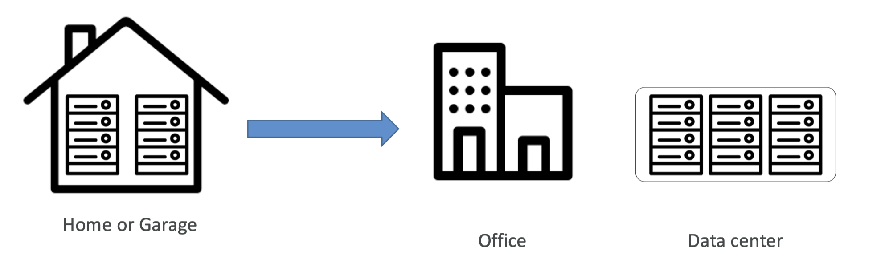

8.1 Cloud Computing#
8.1.1. 클라우드 컴퓨팅의 역사와 진화#
Cloud? 란 무엇일까요? iCloud, Google Drive (Google Photo) 등 일상생활 속에서 클라우드라는 용어를 많이 보셨을 것입니다. → “네트워크를 이용한 사용성의 극대화”라고 생각해보겠습니다.
Computing? 컴퓨팅 자원 → FROM COMPUTER
클라우드 컴퓨팅 역사(History)#
가상화 (virtualization)
(1970~1980) IBM은 시스템/360와 시스템/370 메인프레임 시스템에 가상화 기능을 도입했습니다. 이로써 하나의 물리적 시스템을 여러 ‘가상’ 시스템으로 분할하여 사용할 수 있게 되었습니다.

분산 컴퓨팅과 그리드 컴퓨팅
(1990 - 2000년대 초): 여러 컴퓨터를 네트워크로 연결하여 공동으로 문제를 해결하는 분산 컴퓨팅과 그리드 컴퓨팅이 발전했습니다. 이들 기술은 클라우드 컴퓨팅의 발전에 중요한 역할을 했습니다.
웹 2.0
(2000년대 중반 - 현재) : 웹 2.0의 등장으로 사용자들이 동적인 콘텐츠를 생성하고 공유할 수 있게 되면서, 웹 기반 서비스가 대량의 데이터를 저장하고 처리하는 데 필요한 클라우드 기반 인프라에 의존하게 되었습니다.
Plus, 하드웨어의 발전
⇒ 가상화와 분산컴퓨팅(소프트웨어), 하드웨어의 발전, 네트워크의 발전, 마지막으로 대기업의 자본이 클라우드 컴퓨팅 “서비스”를 가능하게 만들었고, 수요가 있으니, 만들어 버렸습니다.
클라우드 컴퓨팅 서비스의 등장
(2000년대 후반 - 현재): 2006년, 아마존웹서비스(AWS)가 Elastic Compute Cloud(EC2)를 론칭하면서 상용 클라우드 서비스가 시작되었습니다. 이후 구글, 마이크로소프트, IBM 등이 클라우드 서비스를 제공하기 시작하였습니다.
클라우드 컴퓨팅 등장 배경 (사용자 기준의 변화)#

문제점
데이터 센터 땅값…
전기값… 쿨링… 유지보수 비용
하드웨어 추가, 교체에 시간이 든다
Scaling이 힘들다..
3교대 인건비?
재난 상황… (카카오 데이터센터)
이러한 문제점들을 노리고 나온 것이 Cloud Service 입니다.
on-demand : 컴퓨팅 파워, 데이터 스토리지, 애플리케이션, 등등 필요한 것만
pay-as-you-go : 쓰는 만큼 내라
컴퓨터 Scaling도 마음대로
변경도 마음대로
즉각적으로 변경되며 (껐다켰다 없다..)
관리는 HOST가..
8.1.2. 클라우드 배포 모델#

8.1.3. 클라우드 서비스 모델#
끝으로 다양한 클라우드 서비스 모델에 대해서 알아보도록 하겠습니다.

1. Infrastructure as a Service (Iaas)#
가장 기본적인 클라우드 서비스
가상화된 컴퓨팅 리소스 제공
Iaas 사용자는 네트워크, 서버, 데이터 스토리지 등의 인프라를 직접 구성 및 관리,
하드웨어는 클라우드 공급 업체가 관리
→ 가상 머신, 서버, 스토리지, 네트워크, 로드 밸런서
→ Amazon Web Services (AWS) EC2, Google Cloud Platform (GCP) Compute Engine, Microsoft Azure Virtual Machines.
2. Platform as Service (PasS)#
Iaas에 비해 더 높은 수준의 추상화 제공 - 애플리케이션 코드와 데이터만 관리
제공자는 운영체제, 미들웨어, 런타임 등의 인프라 관리
→ 개발 툴, 데이터베이스 관리, BI 서비스
→ Google App Engine, AWS Elastic Beanstalk, Microsoft Azure App Service.
3. Software as a Service (Saas)#
제공자는 소프트웨어 애플리케이션 제공, 소프트웨어와 하위 인프라 모두 관리
사용자는 소프트웨어 기능을 사용, 설정 관리
→ 이메일, 캘린더, CRM 툴, 업무 자동화 툴
→ Microsoft Office 365, Zoom
다양한 클라우드 서비스 모델이 지금 당장 와닿지 않으실 수 있습니다. 각각의 모델별 특징에 대해서 한 번 이해하고 생각해보시면 좋을 것 같습니다(앞으로 자주 마주치게 될 서비스들입니다!)